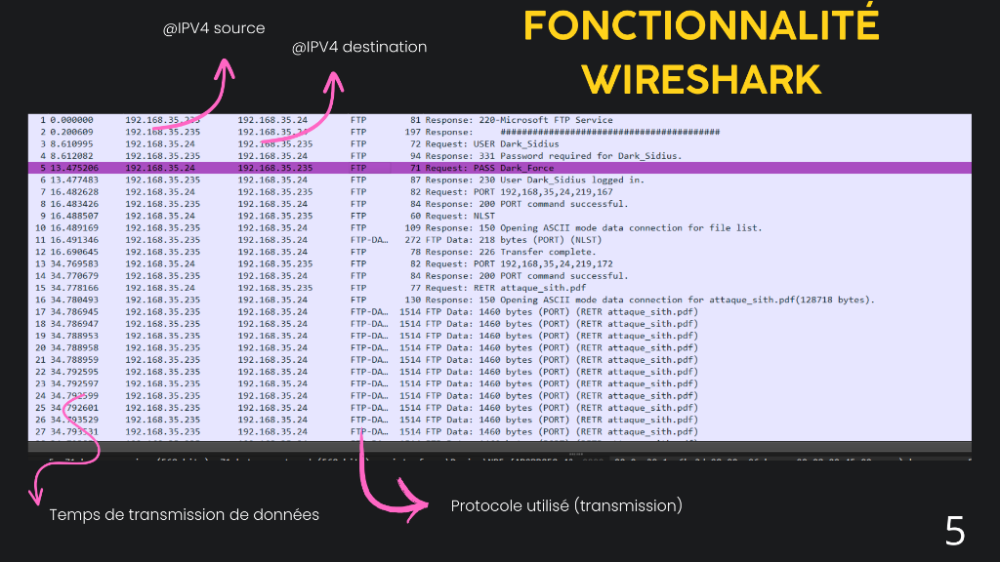
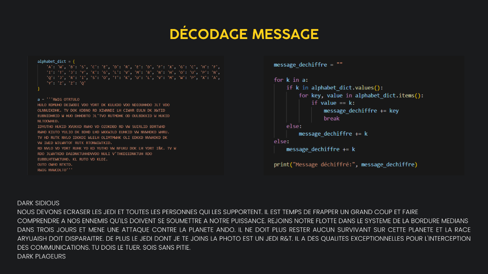
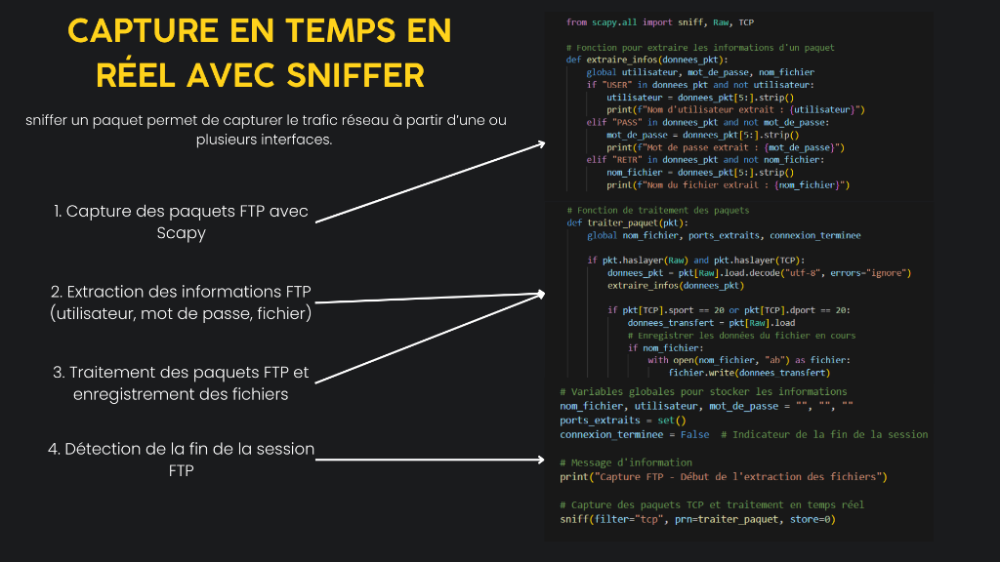

Projet Cyber — Semestre 1
SAE 1.1 — Challenge FTP
CONTEXTE
Interception FTP & CTF
Un CTF (Capture The Flag) est un exercice de cybersécurité où l'on enchaîne des
défis pour extraire une information cachée — un mot de passe, un fichier, un message secret. C'est
le type d'exercice pratiqué par les pentesters (testeurs d'intrusion), l'un des
métiers les plus recherchés en cybersécurité.
Pour ce premier CTF, la mission était scénarisée à la sauce Star Wars : intercepter et décoder un
message chiffré transmis par les Sith via une communication FTP capturée sur le réseau.
OBJECTIFS
Missions du projet
- 1 Analyser une capture réseau Wireshark (fichier .pcapng) et comprendre le protocole FTP en détail.
- 2 Écrire des scripts Python avec Scapy pour extraire automatiquement le login, le mot de passe et le fichier transféré.
- 3 Décoder un message chiffré par substitution alphabétique avec un programme Python.
- 4 Mettre en place un sniffeur FTP en temps réel capable de capturer login, mot de passe et fichiers à la volée.
- 5 Comprendre et expliquer le principe d'une attaque Man-In-The-Middle (MITM).
TECHNOLOGIES
Outils & environnements
Wireshark
Analyse manuelle de la capture réseau FTP
Python + Scapy
Parsing automatique des paquets FTP et extraction
FileZilla
Client et serveur FTP pour les tests réels
Jupyter Notebook
Rendu du CTF avec code + explications pas à pas
Root-Me
Plateforme de challenges CTF (formation)
DÉROULEMENT
Les 4 grandes étapes du CTF
Étape 01
Analyse de la capture Wireshark : Identification
du protocole FTP, de l'IP client/serveur, des ports TCP, du mode actif/passif, et
récupération manuelle du login/mot de passe transmis en clair dans les
paquets.
Étape 02
Extraction automatique : Écriture d'un script
Scapy qui charge la capture .pcapng, identifie les paquets pertinents, et extrait
automatiquement login, mot de passe, port de transfert et reconstitue le fichier.
Étape 03
Décodage du message : Le fichier extrait
contenait un message chiffré par substitution alphabétique. Un programme
Python utilisant la méthode find() a permis de le décoder automatiquement.
Étape 04
Sniffing en temps réel : Un script Python
autonome sniffe les paquets FTP en direct sur le réseau et enregistre automatiquement tout
fichier transféré avec son nom d'origine.
RÉSULTATS

Preuves & démonstrations

Cliquer pour voir
Cliquer pour voir

Cliquer pour voir

Cliquer pour voir
COMPÉTENCES
Ce que j'ai appris
- Analyse de captures réseau avec Wireshark : lecture des trames, protocoles, données.
- Compréhension approfondie du protocole FTP (modes actif/passif, négociation, clair).
- Programmation Python & Scapy : parsing de paquets, filtrage, extraction.
- Introduction à la cryptographie : chiffrement par substitution et décodage.
- Sensibilisation aux risques de sécurité : protocoles non chiffrés, MITM.
- Découverte des plateformes CTF (Root-Me, HackTheBox, VulnHub).